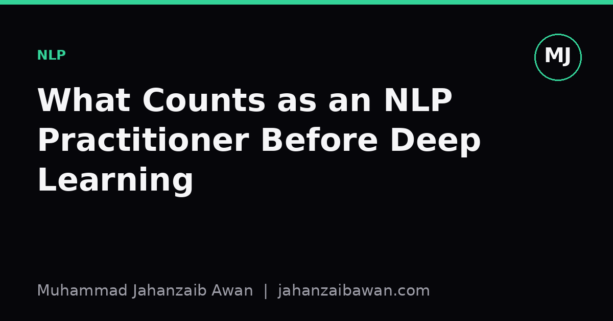
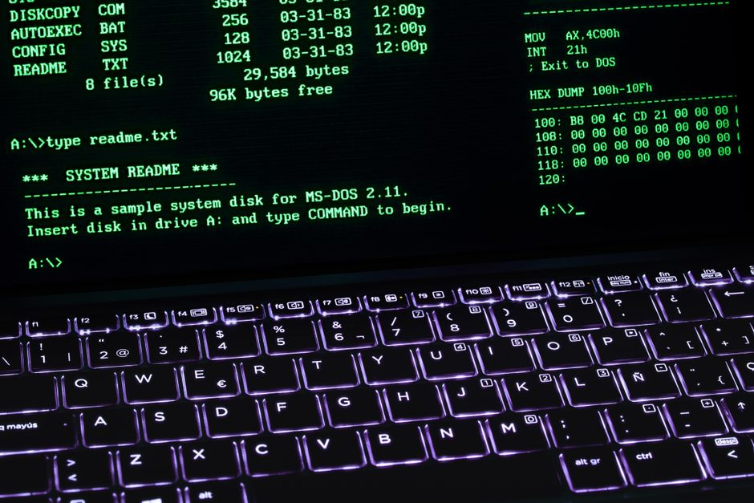

What Counts as an NLP Practitioner Before Deep Learning
Long before transformers, people were building working language systems with regular expressions, grammars, and finite-state machines. That history still shapes what good practice looks like.

The quiet erasure of a discipline's own history
Ask someone what an NLP practitioner does and you will likely hear about transformers, embeddings, and fine-tuning large language models. That answer is not wrong, but it is incomplete in a way that matters. Natural language processing existed for decades before deep learning became the default toolkit, and a great deal of that earlier work was rigorous, useful, and intellectually demanding. Calling someone an NLP practitioner only if they train neural networks quietly erases the people who built spell checkers, machine translation systems, parsers, and information extraction pipelines using grammars, finite-state automata, and hand-crafted rules.
I think this matters for more than nostalgia. When a field forgets its own methodological roots, it tends to repeat mistakes that were already solved, or dismiss simple, robust solutions in favour of complexity that is not warranted by the task. A tokenizer built from carefully considered regular expressions is still an NLP artefact. A part-of-speech tagger built on hidden Markov models is still NLP. Someone who spent years writing context-free grammars for a parser was doing NLP just as much as someone fine-tuning a transformer today, and often with a sharper understanding of the linguistic structure they were modelling.
A worked comparison: rules versus a neural tagger on a narrow task
Consider a concrete example: extracting dates from free text, such as invoices or medical notes. A rule-based approach might use a handful of regular expressions tuned to formats like '12/04/2023', '4th April 2023', and 'April 4, 2023'. Suppose this rule set is built and tested against a held-out sample of 500 documents, in which dates appear in one of six known formats. It could plausibly achieve something like 96% recall and 98% precision, because the format space is genuinely narrow and each pattern can be inspected, debugged, and fixed by hand when it fails.
Now imagine training a small neural sequence tagger for the same task on a similarly sized dataset. Without a large amount of labelled data or transfer from a pretrained language model, that tagger will likely underperform the regex system, perhaps sitting closer to 85 to 90% recall, and its failures will be harder to diagnose because they are distributed across weights rather than isolated in an inspectable pattern. The neural approach only starts to pull ahead once the date formats become genuinely unpredictable, the surrounding context matters for disambiguation, or the volume of labelled data grows large enough to justify the model's flexibility.
This is not an argument against neural methods; it is an argument for matching the tool to the problem, which is precisely the judgement that rule-based practitioners had to develop out of necessity. When compute and data were expensive, you could not simply throw a large model at a narrow, well-structured problem. You had to understand the structure of the language phenomenon you were modelling, and that understanding produced systems that were transparent, debuggable, and often extremely reliable within their intended scope.

Why the rebrand happened, and what got lost
The shift towards deep learning in NLP was driven by genuine wins: neural methods handle ambiguity, long-range dependency, and generalisation across domains far better than hand-written rules ever could, particularly once large pretrained models became available. It made sense for the field's centre of gravity to move. But somewhere in that transition, the framing shifted from 'NLP is the study of computational methods for language' to 'NLP is applying deep learning to text', and that narrower framing has consequences.
One consequence is a weaker baseline culture. If a practitioner has never had to build a rule-based system, they may not think to compare their neural model against a simple regex, dictionary lookup, or a linear classifier with bag-of-words features before reaching for something heavier. I have seen this pattern in practice: a fairly involved neural pipeline outperforms a naive baseline by a modest margin, but no one checked whether a properly tuned rule-based or statistical baseline would have closed most of that gap at a fraction of the cost and with far greater interpretability. Skipping that comparison is not just intellectually lazy, it is a leakage-adjacent risk in disguise, because without a credible baseline you cannot tell whether your reported gains reflect the model or an artefact of the evaluation setup.
Another consequence is a loss of linguistic literacy. Building a parser or a morphological analyser by hand forces you to confront the actual structure of language: agreement, tense, ambiguity, compositionality. Practitioners who came up through that route tend to have sharper intuitions about why a model fails on a particular sentence, because they have spent time thinking about sentences as structured objects rather than as token sequences to be embedded.
A practical takeaway for anyone working in language technology
None of this is an argument for abandoning deep learning or pretending finite-state methods are competitive with modern language models on open-ended tasks; they are not, and it would be dishonest to claim otherwise. The point is narrower and more useful: anyone who has built systems using regular expressions, grammars, lexicons, or classical statistical models for language tasks has legitimate NLP experience, and that experience carries transferable skills that remain valuable today.
In practice, this suggests a habit worth adopting regardless of which era of methods you come from. Before reaching for a large neural model, spend an hour building the simplest rule-based or statistical baseline you can justify, and evaluate it honestly on a held-out set that reflects how the system will actually be used. If the baseline gets you 90% of the way there, you have learned something important about the task's true difficulty, and you can make a far more informed decision about whether the added complexity of a neural approach is actually earning its keep. That habit, more than any particular architecture, is what being a serious NLP practitioner has always meant.